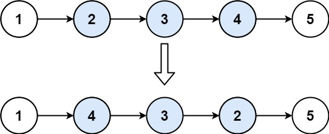

| Category | Difficulty | Likes | Dislikes |
|---|---|---|---|
| Algorithms | Medium | 12701 | 764 |
google | amazon | microsoft | bloomberg | facebook | oracle | bytedance | nvidia | tiktok | nutanix | arista-networks | apple | adobe | walmart-labs | zoho | epam-systems
Given the head of a singly linked list and two integers left and right where left <= right, reverse the nodes of the list from position left to position right, and return the reversed list.
Example 1:

Input: head = [1,2,3,4,5], left = 2, right = 4
Output: [1,4,3,2,5]Example 2:
Input: head = [5], left = 1, right = 1
Output: [5]
Constraints:
n.1 <= n <= 500-500 <= Node.val <= 5001 <= left <= right <= nFollow up: Could you do it in one pass?